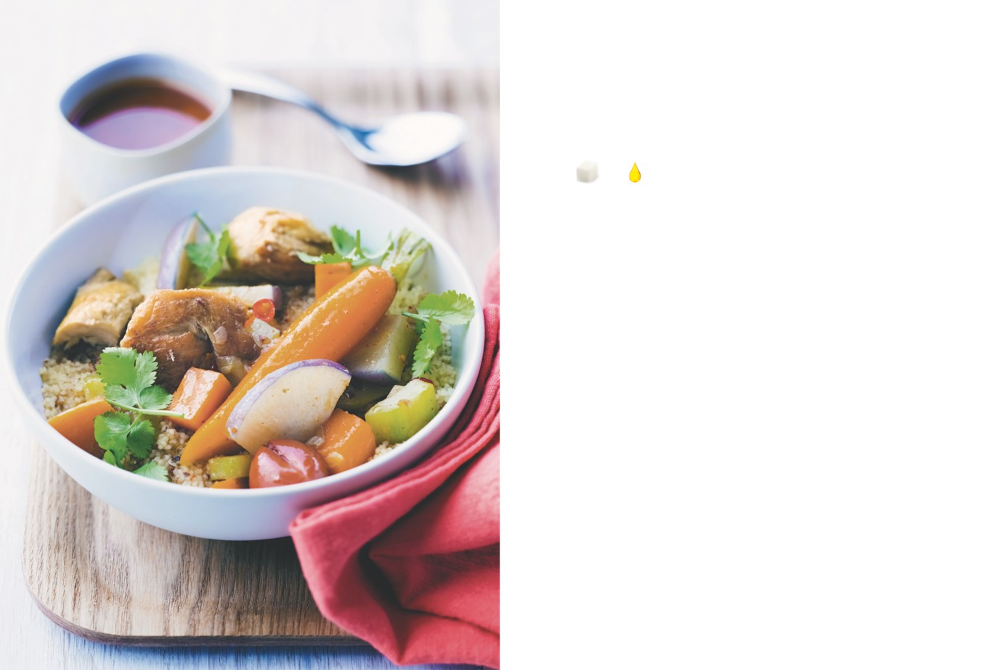

Couscous de poulet
aux sept légumes
PRÉPARATION : 30 minutes / CUISSON : 1 heure
APPORTS NUTRITIONNELS PAR PERSONNE
1.
Préparez le couscous : dans un grand plat creux, mélangez-le
avec 1 cuillerée à soupe d’huile d’olive et mouillez-le avec 25 cl
d’eau salée au sel fin. Mélangez soigneusement, laissez
le couscous absorber tout le liquide puis « roulez »-le avec
10
1
les mains (opération plus facile qu’elle n’en a l’air : émiettez
carrés
carré
la totalité du couscous petit à petit entre vos paumes jusqu’à
de sucre
de graisse
ce qu’il ne reste plus de grumeaux). Cela fait, versez le couscous
roulé dans la partie haute du couscoussier (ou d’un cuit-vapeur
garni d’une couche de mousseline) et réservez.
Ingrédients pour 4 personnes
2.
Faites revenir le poulet dans le reste d’huile dans la partie
basse d’un couscoussier jusqu’à ce qu’il soit doré sur toutes
200 g de couscous fin (c’est-à-dire 600 g
une fois cuit, soit 150 g par pers.)
ses faces. Retirez-le du récipient et jetez toute la graisse
2 cuillerées à soupe d’huile d’olive
de cuisson. Remettez le poulet dans le récipient, ajoutez l’ail,
les piments, le gingembre, les tomates, les oignons, les navets
1 poulet fermier découpé en 8 morceaux,
ou 1 kg de cuisses de poulet fermier
et les carottes. Couvrez de 2 à 3 cm d’eau, salez, ajoutez les épices
séparées en deux
pour couscous le cas échéant, puis portez à frémissement et faites
4 gousses d’ail épluchées et écrasées
cuire environ 1 heure sur feu doux.
1 ou 2 piments frais, rouges ou verts, entiers
20 g de gingembre épluché
3.
Au début de la cuisson du poulet, ajustez la partie haute
1 cuillerée à café d’épices pour couscous
du couscoussier sur la partie basse où le poulet est en train
(si vous voulez)
de cuire. Ne couvrez pas le récipient et laissez cuire jusqu’à
Sel fin, harissa
ce que la vapeur traverse le couscous. Versez celui-ci dans
le plat creux et mélangez-le rapidement avec 1/2 verre d’eau
Les sept légumes
froide. Remettez-le dans le couscoussier et continuez la cuisson.
2 tomates pelées et épépinées
2 oignons coupés en quartiers
4 navets nouveaux bio, lavés et non épluchés
4.
Entre-temps, les légumes restants (courgettes, courge,
fonds d’artichauts ou choux de Bruxelles ou gombos) doivent
4 carottes nouvelles bio, lavées et non épluchées
être ajoutés environ 15 minutes avant la fin de la cuisson.
4 petites courgettes parées et lavées
250 g de courge rouge ou de potiron,
épluché et coupé en cubes
5.
Servez le couscous avec le poulet, les légumes, le bouillon
250 g de fonds d’artichaut, de choux
et de la harissa si vous l’aimez.
de Bruxelles ou de gombos nettoyés et lavés
L’ASTUCE DE CHEF
On peut accompagner ce plat très complet,
qui allie féculents, légumes et protéines, par
une petite salade de dés de tomates pelées et
de concombre assaisonnés d’ail haché et de
coriandre fraîche.
Viandes et volailles
51